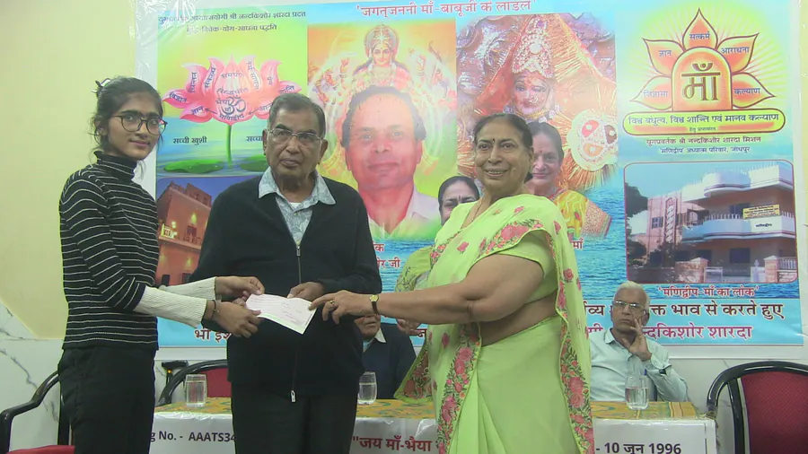

अधिकार
आर्थिक अभाव किसी बालिका की शिक्षा और भविष्य में बाधा न बने।
शिक्षा को अधिकार, संस्कार को आधार और आत्मनिर्भरता को जीवन की सार्थक दिशा मानने वाला करुणामय दृष्टिकोण।
भैया श्री नन्दकिशोर शारदा के शिक्षा-दर्शन का मूल आधार यह विश्वास था कि शिक्षा प्रत्येक व्यक्ति का मौलिक अधिकार है और आर्थिक अभाव किसी भी बालिका के भविष्य में बाधक नहीं बनना चाहिए।
वे मानते थे कि ईश्वर ने प्रत्येक व्यक्ति को कोई न कोई प्रतिभा प्रदान की है। शिक्षा उस प्रतिभा को पहचानने, विकसित करने और जीवन में सार्थक दिशा देने का माध्यम है। इसलिए शिक्षा सुविधा सम्पन्न वर्ग तक सीमित न रहकर समाज के प्रत्येक वर्ग तक पहुँचना आवश्यक है।
शिक्षा तभी पूर्ण है, जब वह ज्ञान के साथ संस्कार, विनम्रता और कर्तव्यबोध भी विकसित करे।

भैया जी शिक्षा और संस्कार को एक-दूसरे का पूरक मानते थे। उनके लिए शिक्षित व्यक्ति वही है जो ज्ञानवान होने के साथ विनम्र, संवेदनशील और कर्तव्यनिष्ठ भी हो।
आर्थिक अभाव किसी बालिका की शिक्षा और भविष्य में बाधा न बने।
किताबी ज्ञान के साथ विनम्रता, संवेदनशीलता और सदाचार का विकास हो।
शिक्षा छात्रा को आत्मविश्वासी, विवेकशील और जिम्मेदार बनाए।
व्यक्तिगत उन्नति परिवार, समाज और राष्ट्र के कल्याण से जुड़े।

श्री नन्दकिशोर जी के विचार में वास्तविक शिक्षा वह है जो व्यक्ति के बौद्धिक, नैतिक, सामाजिक और आध्यात्मिक विकास को एक साथ आगे बढ़ाए। वे चाहते थे कि छात्राएँ परिस्थितियों से संघर्ष करने का साहस रखें, अपने पैरों पर खड़ी हों और परिवार, समाज तथा राष्ट्र के प्रति सकारात्मक भूमिका निभाएँ।
वे बालिका शिक्षा को केवल एक व्यक्ति की शिक्षा नहीं मानते थे। एक शिक्षित और संस्कारित बालिका आगे चलकर परिवार को दिशा देने वाली गृहिणी, संतानों की पहली शिक्षिका और समाज की जिम्मेदार नागरिक बन सकती है। इसी दूरदृष्टि के कारण उन्होंने बालिका शिक्षा को महिला सशक्तिकरण की आधारशिला माना।
उनका शिक्षा-दर्शन सामाजिक समानता पर आधारित था। आर्थिक स्थिति चाहे जैसी हो, प्रतिभाशाली और जरूरतमंद छात्राओं को आगे बढ़ने का अवसर मिलना चाहिए।
इसी सोच के अनुरूप छात्रवृत्ति का निर्धारण केवल परीक्षा में प्राप्त अंकों के आधार पर नहीं, बल्कि आर्थिक आवश्यकता, पारिवारिक परिस्थिति और शिक्षा की वास्तविक लागत को ध्यान में रखकर किया गया। जाति, धर्म या सम्प्रदाय के आधार पर किसी प्रकार का भेदभाव न करना भी इसी व्यापक दृष्टि का हिस्सा था।


श्री नन्दकिशोर जी समझते थे कि आर्थिक कठिनाई केवल पढ़ाई में बाधा नहीं बनती, बल्कि छात्रा के आत्मविश्वास और मानसिक शान्ति को भी प्रभावित करती है। जब फीस और शिक्षा के खर्च की चिंता दूर होती है, तो विद्यार्थी अधिक एकाग्रता और मनोयोग से अध्ययन कर सकता है।
उनके शिक्षा-दर्शन में आध्यात्मिक चेतना का भी महत्वपूर्ण स्थान था। वे चाहते थे कि शिक्षा व्यक्ति को केवल बाहरी सफलता की ओर न ले जाए, बल्कि उसे अपने भीतर की शक्ति पहचानने और जीवन को व्यापक उद्देश्य से जोड़ने की प्रेरणा भी दे।
यही समन्वित अवधारणा आगे चलकर स्वामी विवेकानन्द स्टूडेन्ट्स वेलफेयर चैरिटेबल ट्रस्ट की कार्यपद्धति की आधारशिला बनी।